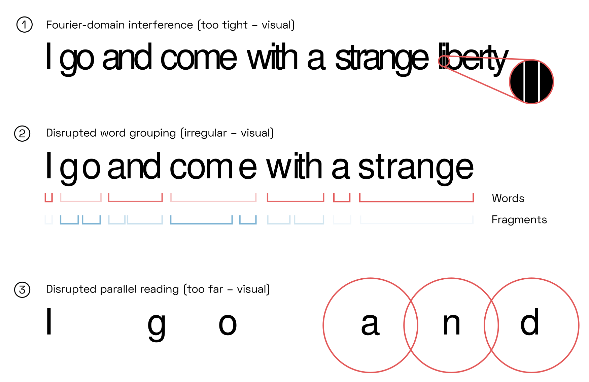

YinYangFit ☯
Modelling for automatic letterfitting, inspired by neuroscience

Acknowledgements
This research would not have been possible without funding from Google.
Abstract
Adjusting letter distances to be visually pleasing is a challenging and time-consuming task. As existing tools are too primitive to reliably handle the infinite variety of typefaces, designers have to mostly rely on their intuitive judgment. I review how letterfitting fits into the current scientific understanding how letters and words are perceived in the brain, and present approximate models that can be fitted to to existing, hand-fitted fonts using backpropagation.
Epistemic status
This article is written by an engineer, not a neuroscientist, for the benefit of the typographic community. It is based on a survey of hundreds of peer-reviewed scientific papers, most of which are not cited explicitly. That said, neurocognitive hypotheses are continuously revised, discarded, and replaced. Nothing in this article should be considered final. I welcome corrections!
Introduction: form follows function, beauty follows legibility
Letterfitting refers to the process of adjusting the distances between pairs of letters I use the word “letter” very liberally; the more general term is glyph. during typeface design.  Red vertical bars show side bearings, blue vertical bar shows a negative kern. It’s often referred to as “spacing and kerning”, because pair distances are the sum of fixed amounts of space around every letter (so-called side bearings) and additional adjustment values for individual pairs (so-called kerns). Quality fonts often contain thousands of hand-kerned pairs that undergo weeks of testing and refinement.
Red vertical bars show side bearings, blue vertical bar shows a negative kern. It’s often referred to as “spacing and kerning”, because pair distances are the sum of fixed amounts of space around every letter (so-called side bearings) and additional adjustment values for individual pairs (so-called kerns). Quality fonts often contain thousands of hand-kerned pairs that undergo weeks of testing and refinement.
Why do we fit letters at all? Some would say that well-fitted type is simply the result of the designer’s personal intuition for beauty. Type designers who adjust pair distances by hand often feel that there seems to be no right answer. In those moments, letterfitting can feel quite arbitrary. If you have not experienced this yourself, the venerable kern game lets you try your hand on existing fonts. Others have tried to appeal to the aesthetics of an “even colour”, i.e. a printed page with a uniform texture and no noticeable blobs of black or white. Meanwhile, Frank Blokland has argued See his PhD thesis. that the distances between letter stems are mainly a holdover from the early days of printing, when the measurements of cast type were the result of practical considerations.
These ideas aren’t wrong, but they’re underpowered. None have led to automated letterfitting algorithms I’ve listed the most popular existing attempts in the appendix. that reliably reproduce the hand-tweaked pair distances in existing fonts—from hairline slab serifs to broad-nib italics, from captions to headline sizes, and from Latin to Khmer.
To move forward, we need to understand how reading works in the brain. By reframing letterfitting as the pursuit of optimal legibility, we can climb on the giant shoulders of generations of cognitive science researchers and begin to understand what vague ideas like “black-white balance” actually mean in our visual cortex. In short: well-fitted text is text that most effectively activates the neural circuitry that allows us to read letters and words, and therefore maximizes reading speed.
The connection between type design and legibility is self-evident and well-studied. Type legend Charles Bigelow recently compiled a comprehensive review of legibility studies, covering many important concepts including weight and optical sizing. But even though psychologists have published plenty empirical findings, we are only just beginning to understand the neural architectures which explain them, and which will one day power the type design tools of the future.
The goal of this article is to provide an informal review of the state of the art in vision and reading science and to explore some new ideas for approximate letterfitting algorithms. I hope that it will inspire both typographers and vision researchers to more deeply explore the connection between letterfitting and perception.
Visual and literal sources of poor legibility: an overview
Letterfitting means making a compromise between the legibility of letters and the integrity of words. A poor fit can ruin both:

When the fit is too tight, the identifiability of individual letters suffers (1). This is a direct consequence of frequency-domain interference, and it is relatively easy to measure directly, as described in Section 5.
When the fit is irregular, word fragments may be perceived as words (2). Ideally, each word is readily perceived as a single object (here: “strange”), rather than as multiple fragments (here: “come”). This means that we need to make all pairs exactly equal in their ability to facilitate perceptual grouping: even a loose fit is still quite legible if it is consistently loose across all pairs. Unfortunately, our scientific understanding of the perceptual grouping of shapes is in its infancy, so predicting grouping strength is a challenge, as we will see in Section 7.
When letters are much too far apart, we can no longer read entire words but need to piece them together letter by letter (3). This likely has to do with the size of receptive fields in our brain’s reading networks, as will be described in Section 4.
Minimizing these three problems does not require us to know the letters we are fitting, or the alphabet they come from. Current geometry-based letterfitting heuristics are limited to this purely visual level. This article, too, is more concerned with vision than with the linguistic subtleties of reading. In the future, however, letterfitting tools may well incorporate character recognition and language models to allow them to deal with semantic aspects:
Pairs of letters may be confused for other letters, particularly when the fit is tight (4). The classic example is rn/m. The fitting algorithm may choose to increase the pair distance according to the statistical likelihood of lexical confusion.
Character models are required to allow the algorithm to ignore decorative elements (5), as purely visual tools cannot distinguish a swash (which may overlap with a neighbouring letter) from a basic letter feature (which must not).
Finally, a well-trained character model may allow the tool to predict which features of a letter are the most salient, and thereby improve the accuracy of the purely visual models.
An informal review of vision and reading
Each of the five challenges mentioned above has a neural correlate in the brain, and computational models of those neural correlates should allow us to algorithmically optimize for a good fit.
Any incoming imagery must pass through multiple stages of visual processing before our letter- and word-recognizing circuitry gains access to it.

Sensory input from the eye travels up the optic nerve, through the lateral geniculate nucleus (LGN) on the brain’s thalamus, to the visual cortex at the very back of the head. The neurons there perform what amounts to a band-filtered wavelet decomposition. Next, the individual signals representing the presence of oriented fragments of lines or edges are correlated by neurons in V2 across space, scale, and orientation. These signals, in turn, are further correlated in area V4, allowing neurons there to respond to the presence of particular shapes or textures. Finally, a hierarchy of cells in the so-called visual word form area, located on the underside of the left hemisphere of the brain, detects letters, combinations of letters, and words.
Superficially, this resembles the kind of feed-forward convolutional networks popular in image recognition software, in which perception is the result of a computation. In the brain, however, plenty of recurrent neural connections turn perception into a continuous process.This interactive visualization is far from realistic but a much more useful visual metaphor than feed-forward deep learning architectures. In particular, conscious perception emerges from the give-and-take between lower-level brain areas, whose state represents fresh sensory input, and higher-level areas, whose state represents the current, pre-processed, sanitized understanding of the world. This is a slapdash framing of set as Bayesian inference via top-down modulation: the original state of the higher-level area corresponds to a statistical prior, the updated state to a posterior, and the concept of states itself to attractors. This is a deep and fascinating area of research of itself, and this article is only meant to convey an intuition, not a rigorous description of reality.
It is accepted, for instance, that lateral connections in V1 allow neurons to inhibit others that are tuned to similar locations, orientations or scales in proportion to their own activation, such that after a few dozen milliseconds, only the neurons with the strongest activations stay active. This achieves a kind of sharpening of the signal, and it is likely that the same competitive mechnanism is active throughout the brain.
Similarly, feedback from higher brain areas can amplify or inhibit the activity of lower-level areas. For example, if V1 responses suggest the presence of a pattern of uniform scale and orientation over a large area (e.g. a vertical grating), the V2 neurons picking up this correlation across space will actively suppress the V1 neurons providing the input. After a brief time, this will dampen the perception of the pattern, while leaving untouched the perception of the pattern’s edge (where V2 activation was weaker).
Tight and loose fits in convolutional reading models
Our reading circuitry itself is best understood as a series of feedback loops as well: between detectors of letters, letter-combinations, and words, such feedback dynamics are necessary to resolve uncertainty about what is seen on the page. Consider the following paradox, which vision researchers have probed in endless studies: on one hand, we can raed wrods even when their letrtes are out of odrer, indicating that the brain ignores most information about letter positions. Jumbled letters are a crowd favourite ever since the infamous Cambridge email meme. The strength of the effect appears to depend on many factors: the relative position of the letter, the jumbling distance, and on your age (curiously, it does not depend on whether you are a human or a baboon). English words are particularly forgiving to letter transpositions, while e.g. Semitic languages are much more sensitive to them, as pointed out by Israeli researcher Ram Frost. On the other hand, we have no trouble distinguishing anagrams like cat and act. Nobody has yet observed the responsible neurons in action, but the mountains of experimental data tell a story that goes like this:
The word cat appears in the center of vision, triggering a cascade of electrical pulses in the visual cortex. Vertical, horizontal, and angled features are detected in various places, and they combine to activate neurons that code for the presence of letters. In early models of reading, researchers thought of these letter detectors as assigned to fixed positions, representing data like “c” in position 1, “a” in position 2, and so forth—but that’s not realistic. Instead, there are probably multiple detectors activating for each letter, and because of the spatial uncertainty introduced by multiple levels of convolutional feature detection, all they can do is collectively express a probability distributions in space:This is the overlap model by Gomez, Ratcliff, and Perea.

The probabilistic nature of this architecture, which is illustrated in the diagram by circles representing stronger and weaker activations, naturally extends to neurons which detect the presence of ordered combinations of letters.The concept of such combination-detecting neurons originated with the open bigram model championed by researchers Carol Whitney and Jonathan Graigner. Soon, biologically plausible models were proposed (I particularly like this paper by Dehaene et al. for its lucid explanations), followed by fMRI evidence. Although the diagram above shows only two types of detectors—letters and bigrams—the brain likely contains a whole interconnected hierarchy of them, detecting letters, bigrams, trigrams, quadrigrams, and larger morphemes, all of which contribute to the detection of the word. There is increasing evidence that our brains develop direct, visual, orthographic representations of words we encouter often, without having to recruit e.g. phonologic processing (see e.g. this study by Glezer et al.). It is not clear whether detectors correspond to single neurons (sparse coding) or constellations of neurons (population coding), especially at the level of quadrigram or morpheme detectors. All of the above likely use overlapping, Gaussian-weighted receptive fields.
Which word we finally perceive is not up to the letter-combination detectors, however. Instead, that’s a decision for the rather more dignified brain areas that deal with language processing—and they are free to disagree with the visual system. To illustrate, let’s consider a situation where cat was, in fact, a typo for act.
Imagine, for instance, that just before seeing “cat” we had read the words “police caught the bank robber in the”. At this instant, our language networks are already sizzling with electrical activity that renders the neurons for act especially sensitive. Shortly after, some signals arrive from below: Or from behind, rather, to be faithful to anatomy. signals for CA and AT, moderate signals for AC and OA, and some weak signals for CT, as shown in the diagram above. However, despite their strong activation, the neurons for CA and AT find it difficult to activate any word-coding neurons. Sure, cat fires some spikes, but without the support of the rest of the language network, it’s a rather hesitant activation. Meanwhile, even the comparatively small contributions of AC and CT (and AT, which is also weakly connected to act) are enough to give the primed act a serious boost. This seals the deal, because act has modulatory neural connections going backwards to AC and CT, creating a self-amplifying feedback loop that has act glowing red-hot (metaphorically) within just tens of milliseconds, far outdoing any notion of cat. This story is a tremendous oversimplification. The neural deliberations involved in word individuation depend on first and last letters, syllable structure, position of vowels and consonants, and other factors that are still the subject of painstaking research. In addition, detectors may well have lateral inhibitive connections to implement direct competition between them, so as time passes, act may actively suppress cat, or the two may oscillate back and forth, depending on the circumstances. No diagram can do these complicated two-way dynamics justice, of course, but we might visualize the effect of the initial top-down feedback like so:

This process of “word individuation” takes about quarter of a second; meanwhile, the eyes have long moved on to the next sentence. There are several EEG studies on this subject, but this one is especially cool as it involves deep-brain stimulation of live human volunteers. A quick reader might therefore never notice the typo at all. Of course, this error-correcting mechanism is even more effective for jmbueld letrtes, because letrtes isn’t a word at all—there are no neurons or synapses coding for it in our language system, so the next-best word will always win by default. That’s true even though the initial mismatch may be enough to draw your conscious attention, which unpleasantly interrupts the flow of reading. It’s not clear how that works, although the predictive coding theories of the brain, promoted heavily by researchers like Karl Friston and Andy Clark, provide some promising ideas. This article by Jacob Hohwy contains many of the relevant references.
This understanding puts in stark relief why letters should not be too close or too far apart. Strong activations in the correct letter detectors and letter-combination detectors, and the absence of activation in distracting signals, guarantee that activity settles on the right word detector quickly.Notably, the model also predicts that jumbled letters are easier to read in a tight fit—I’m not aware of any studies on this, but it certainly seems plausible. However, the tight fit would lead to more letter identification and letter position errors ispo facto, so it’s still more desirable to optimize under the assumption of correctly spelled text. And the faster and more confidently readers perceive words, the faster they can read without needing to do jump back for double-takes.

I grant that the above story remains a hypothesis until electrocorticographical evidence shows an effect of letterfit on the temporal dynamics of word individuation. The theory seems plausible, however, and compels us to find ways to estimate how pair distances affect letter detectors and letter-combination detectors.
The architecture described above suggests that the most effective way to activate a particular letter detector is to present nothing but the corresponding letter—in other words, at a pair distance of infinity, or at least exceeding the width of our field of vision. Contrarily, it is intuitively clear that touching or even overlapping letters are difficult to recognize. This would mean that more loosely fitted words are easier to recognize, and indeed, research confirms just that. See e.g. these experiments by Gomez and Perea. Buy sadly there’s no free lunch for typographers, either. When text is tracked out, less of it fits into the field of sharp vision (the “visual span”, as Gordon Legge calls it), so it takes extra saccades to process the whole text (see e.g. Legge et al.’s visual span experiments). All in all, it’s a wash in terms of reading speed. The only ones who consistently benefit from a looser fit are dyslexics, as reported by Marco Zorzi et al., which suggests that (at least some forms of) dyslexia are related to a deficit in letter-position coding. We will discuss the mechanisms responsible for this letter-letter interaction in the next section.
At excessively large distances, the letter detectors are too far apart in space in order to jointly activate the letter-combination detectors, which after all have receptive fields of a limited size. In fact, this experiment by Fabien Vinckier et al. showed precisely that once more than two spaces are inserted between letters, reading speed drops off a cliff, a distance which aligns well with the proposed receptive field size of bigram detectors. This could explain why excessively loose fits hurt legibility.
We can further note that in tight pairs, the problem of diminished letter detector activation is actually compounded by an increase in the activation of the reverse-order bigram detector, which likely directly competes with the desired bigram detector (shown as the comparatively strong activation of AC in the top row of the diagram above). But in practice, the severity of this problem likely pales in comparison to the weakening of the letters themselves, and its effect on word individuation speed depends on too many other factors (width and shape of the letters, orthographic frequency of the reverse-order pair, etc.) to model it effectively.
Word perception in reading models
As we have seen, current models of reading offer some ideas for why letters must not be too close or too far apart, and even how we might go about estimating the impact of pair distance on letter detector activation. Unfortunately, they do not address word perception, which motivates regularity of fit. What do we know about word perception?
To scan a line of words, our eyes make saccadic movements. After coming to rest for a fraction of a second to take in some imagery, the eyes make a targeted jump ahead just far enough to reveal text that was previously too blurry to process. Researchers have studied saccades in reading for a while: Gordon Legge et al. built a statistical model called Mr. Chips in 1997 to predict the need for saccades based on partially perceived words, and found it to match human performance quite well. There is significant overlap between the images from subsequent saccades, and although the eyes often come to rest between the beginning and middle of each word, fast readers can easily take in multiple small words in a single saccade. The visual cortex therefore needs a mechanism to keep track of words across saccades, and our reading circuitry needs to be able to limit processing to individual words.
This challenge, of course, is not particular to reading text. Our gaze moves around constantly, and yet we effortlessly keep track of objects in our vision without confusing them. This requires more than a trivial remapping, because our world is three-dimensional and how much an object is shifted depends on how far it is away. Depth perception therefore requires our visual system to intelligently group raw sensory signals into coherent objects. Although reading requires no depth perception, our visual cortex automatically groups nearby letters into words.
Just as we are able to consciously perceive a single tree even when looking into the forest, the letter detectors in our visual word form area are evidently able to limit themselves to single words at a time, even though many other letters are clearly being processed in the visual cortex at the same time. Although the timing of activating the letter detectors certainly plays an important role during fast reading, word perception still works when we fix our gaze. The likely mechanism therefore involves yet another feedback loop: paying attention to a word, even if we are not looking directly at it, neurally translates to injecting, top-down, extra energy into a resonating pattern of electrical activity that extends through lower and higher brain regions and that automatically spreads out horizontally to cover the spatial extent of the whole word (or tree, or other object). Thanks to this self-reinforcing feedback, a tiny bit of attention somewhere within the word is enough to light up the entire word within a few milliseconds, and thereby allow our reading circuitry to perceive just one word at a time.
The crucial ingredient therefore is the question: how does the attention spread to cover the whole word?
This understanding creates a few questions. First: how does this work with languages which don’t use spaces? And second:
The direct effect of pair distances on the primary visual cortex
The line- and edge-detecting neurons in V1 receive input directly from the

These neurons are called simple cells, and we can easily predict their response to a given input. For instance, when we see an single uppercase I on a page, some simple cells will respond strongly and others not at all, depending on the tuning and location of their receptive fields: This was first discovered by David Hubel and Torsten Wiesel in the 1950s, by showing patterns of light to a cat after sticking electrodes in its brain (video of said cat). The researchers went on to win a Nobel Prize for their experiments.

It is these signals—the image decomposed into fragments of lines and edges of various sizes and orientations—that provide the input for further visual processing and, ultimately, the letter detectors. In software models, the filtering operation performed by simple cells is typically implemented as Fourier-domain multiplication with a bank of complex band-pass filters, which turns the two-dimensional input image into a four-dimensional tensor (height, width, spatial frequency scales, orientations) of complex numbers, the magnitude and phase angle of which capture the activation of a hypothetical simple cell at every location.
As it turns out, some V1 neurons are less sensitive to phase than others, and some may even respond equally to both lines and edges, as long as scale and orientation match their tuning. Those cells are called complex cells, and how they interact with simple cells is still unclear, Simple and complex cells lie along a spectrum of phase specificity, which is brilliantly explained by this recent paper by Korean researchers Gwangsu Kim, Jaeson Jang and Se-Bum Paik. But it seems that there’s even more to the story, as complex cells seem to change their simpleness index in response to their input as well. although thanks to their phase invariance, they have traditionally been modelled as summing the activations of nearby simple cells. In software, that translates to taking the absolute magnitude of the complex tensor mentioned above. Conventionally, the square of the magnitude is used for further computations to account for the nonlinear behaviour of complex cells; this is often called the local energy.
[image]
In the context of letterfitting (and perception research in general), the existence of complex cells is convenient because invariance to phase implies invariance to contrast inversion—and of course our letterfitting algorithm needs to work equally well for white-on-black as for black-on-white text. The colour information is perserved by neurons in the so-called blob areas of the visual cortex, and integrated in area V4; our concern here is only the structure, however.In practice, dark text on light backgrounds lead to measurably better reading performance. Not only do light backgrounds make the pupil contract, creating a sharper image, but V1 outputs are also stronger for dark features, so it seems doubtful that complex cells truly have a leading role in letter recognition. After summing over all orientations, the map of complex cells responses for the uppercase I looks like this:

Next, consider what happens to the activations of simple and complex cells when a second letter is added. Shown here, for instance, are the activations of some complex cells to the left and right side of a lowercase n. (The fixed-phase receptive fields are shown only to illustrate the peak-response phase angle at the given location).
The V1 response to the standalone letter includes cells whose receptive fields cover, in part, the space to the right of the letter. Adding a neighbouring letter on the right partly fills this space, reducing the activation of said cells. In other words: adding the neighbour directly takes away from the signal available to stimulate higher cortical areas, i.e. the letter detectors.
This interaction goes both ways: it happens simultaneously for both involved letters, and it is a direct result of the squashing of phases into local magnitude values that is characteristic of complex cells. In particular, the activation near the inner edges of the letter pair is reduced, and thanks to the squaring operation, the activation within the gap is strengthened.Note also that this is distinct from the lateral masking effect commonly attributed to lateral inhibitive connections in the early visual cortex. Somewhat surprisingly, the only author known to me who has published on interference at the stimulus level is researcher Bernt Christian Skottun, who has (as of early 2020) not garnered any citations on his papers.
Of course, this interference is only a concern for cells with receptive fields affected by both letters. Receptive fields that are smaller than the gap itself are not affected:
[image]
In other words, signals representing smaller frequency scales are only affected when letters are very close together, while large scales see a a reduction at larger distances too:
[image]
Research has shown that humans rely mostly on the mid-size scales for letter recognition.This is widely recognized, but perhaps most clearly described in this article by Oruç and Landy and this article by Legge and Bigelow. Extra-fine details like serifs are relatively unimportant. We can therefore assume that loss in mid-size signals is most detrimental to the letter detectors:
[image]
Of course, “mid-size” is relative to the font size, tying in the idea of optical sizing: At larger font sizes, smaller details shift into the mid-size range of spatial frequencies and dominate letterfitting decisions, whereas at very small sizes, it is entire letters that dominate. We could think of three broad regimes: serif-serif interference, stem-stem interference, and letter-letter interference.
How exactly does the energy loss in certain locations, orientations and scales affect the activation strength of the letter detectors? This is a difficult question to answer, because we have no precise knowledge of all of the neural computations performed between the retina and the visual word form area. Generally, we can assume that the loss at the letter detector is nonlinearly related to the weighted sum of the energy loss, and estimate the weights via backpropagation against existing fonts. Weights could span the spatial frequency scales and orientations, or (in addition) the vertical axis. Weights could even incorporate full saliency maps for each letter, although that is best done using the kernels of pre-trained letter detectors, for re-usability.
One approach, for instance, would model the total loss at the letter detector as the complement of a hyperbolic ratio function, with parameters that differ for each letter.
Consistency of fit: word grouping, and how to optimize for it
Arguably, there is a best fit for any font. However, even somewhat tight or loose fits could be considered acceptable, as long as the pair distances are perceived to be consistent. Why is the occasional loose pair so noticeable, but fully tracked-out text is comparatively unremarkable?
The cognitive science literature offers two answers to this question:
- An inconsistent fit facilitates the perception of bogus word gaps between letter pairs that just happen to be unexpectedly loose.
- An inconsistent fit facilitates the perception of an uneven colour across the page, i.e. visually salient blobs of dark or light colour.
These two explanations point to two closely related phenomena known as perceptual grouping and crowding.
Perceptual grouping refers to our visual system’s ability to lock onto contiguous objects. This ability allows us to perceive objects as separate from their surroundings (“figure-ground segmentation”), in order to examine and learn about them. In the context of reading, this is how we effortlessly group nearby letters into words. The rules according to which our brain groups visual signals are complicated and still poorly understood. Proximity, collinear alignment, and regular spacing appear to be crucial; these factors, described by Gestalt psychologists a century ago, also describe good letterfitting. An unexpectedly large gap between two letters thus results in perceptual grouping of two separate word fragments, which hampers reading.
Crowding refers to our inability to make out letters in our visual periphery when they are flanked by other letters, even though we can identify them easily when they stand alone. In other words, wherever the spatial statistics are relatively uniform (as in a leafy forest, across a metal grating, or in a group of letters) our visual system degrades the exact visual signals into a “good-enough” summary of said statistics. The most fruitful ideas on this topic have come out of Eero Simoncelli’s lab at NYU, see e.g. the experiments by Javier Portilla and with Ziemba, Freeman and Movshon. This effect is particularly strong in the visual periphery. However, crowding never affects visual features which stand out from their surroundings (as in a stand-alone letter, an unexpectedly large gap, or very tight pair), even in the periphery. In the context of typography, the “evenness of colour” can thus be operationalized as the strength of crowding facilitated by the text. The idea that a good letterfit should help degrade, not enhance, the visual information in the brain may seem suprising. But crowding is likely an adaptation to minimize the energy needed to process background scenery, and features can escape crowding by being saliently different from their surroundings. Saliently different spatial statistics would be considered a distraction, rather than a design success, by any reasonable typographer. Indeed, this applies not only to the gap between letter pairs but also to the design of individual letter outlines, which suggests that type design tools could use such statistics to guide the design process.
It appears that the spatial statistics underlying crowding are primarily represented by neurons in area V2, and that the neural processes underlying grouping operate on neurons in V4 which encode shapes. Experiments further suggest that clusters of shapes are more susceptible to crowding if they group together, and that the dynamics of grouping, in turn, depend on our spatial attention. Most of the work on this relationship has come out of Michael Herzog’s lab at EFPL (see here for a comprehensive summary). The most rigorous empirical evidence was compiled by Doerig et al., and their best current model (see this paper by Francis et al. and, more recently, this paper) is based on the ideas of Steven Grossberg. Therefore, a full account of our perception of letters and words would require a neural-level understanding of the feedback loops responsible for grouping and crowding.
Unfortunately, this understanding is currently rudimentary at best. What’s more, even if intricate dynamical models of the visual cortex become available to correctly predict crowding and grouping behaviour, their computational complexity would likely make them unsuitable for the use in design tools. While I continue this line of research, we would be well served by simpler models that still capture the essence of grouping and crowding.
Any model should comply with two basic sanity checks
The distance between straight stems should be uniform, regardless of the presence of ascenders (nn vs. nl), descenders, or serifs. It should stay uniform even despite differences in stroke contrast (IU vs. UL). Uppercase distances are larger.
The distance between round letters should be smaller than that between straight stems (oo vs. nn).
Both of these generally hold true across typefaces:

Evidently, the counter width has minimal influence on the gap widths. One crude method, therefore, is to simply approximate the gap width via the spectrum of the energy gains, as in the V1-based model in Section 6 above.
[explain model]
- Predictive coding model
- Explains surround suppression
- V1 combine to V2 neuron that says “lots of similar V1 in this wide area”
- Suppresses incoming V1s, because they’re all the same.
- V2 measures correlation between V1s in a certain area.
- V4 measures correlations between correlations.
- V4 has a certain texture that is quite active.
- V4 the strengthens those correlations in V2.
- V2 then suppresses the V1 parts more.
- V4 strengthens V2, V2 weakens V1. (or both).
One promising, if likely oversimplified, theory explains perceptual grouping as a process that spreads not just across connected surfaces, but also along boundaries.
 The classic illusion by Gaetano Kanizsa demonstrates the perception of illusory contours. On the right, an illustration of the facilitative receptive field of a bipole cell (top), and how their feedback creates illusory contours (left, right, bottom). Bipole cells feature most prominently in the work of Stephen Grossberg, but have been independently proposed by many others, particularly in the context of contour integration, e.g. Zhaoping Li’s 1998 model. Notably, this would include illusory boundaries, the kind that enable us to see the classic Kanizsa square. Such illusory boundaries are presumed to be due to feedback from neurons aggregating signals from a bipole-shaped receptive field.
The classic illusion by Gaetano Kanizsa demonstrates the perception of illusory contours. On the right, an illustration of the facilitative receptive field of a bipole cell (top), and how their feedback creates illusory contours (left, right, bottom). Bipole cells feature most prominently in the work of Stephen Grossberg, but have been independently proposed by many others, particularly in the context of contour integration, e.g. Zhaoping Li’s 1998 model. Notably, this would include illusory boundaries, the kind that enable us to see the classic Kanizsa square. Such illusory boundaries are presumed to be due to feedback from neurons aggregating signals from a bipole-shaped receptive field.
grouping happens based on statistics, not based on boundaries.
Simon Coen-Caghli say that crowding modulation is particulary active for natural stimuli. It also says that the kind of crowding in letter perception, which is foveally asymmetric, may not be exactly the same thing as texture modulation for naturalistic textures. Also texture modulation isn’t exactly the same as crowding, because it’s not asymmetric.
It could be that not only V2 is affected but also V1, via surround suppression, which is different for naturalistic stimuli than for letters; or it could be that grouping strength affects the size of the pooling windows.
Although in nature, grouping increases crowding and interacts with it in particular ways, we can aim to increase both separately, by measuring both boundary connection and statistical similarity.
Glotin et al., ART model of open bigram-based word recognition: https://citeseerx.ist.psu.edu/viewdoc/download?doi=10.1.1.624.363&rep=rep1&type=pdf
Ram Frost: Towards a universal model of reading. (Hebrew seems to be more strict in letter position coding) https://www.ncbi.nlm.nih.gov/pmc/articles/PMC3677812/
I should note that it is possible to build a letterfitting model that relies only on limiting the weighted sums of destructive interferences to a constant. Such an approach implements the idea that maximizing the activation of letter detectors is paramount, even if we can only do so approximately. The simplicity of this makes it seem like an attractive option.
Curiously, word breaks have been all but ignored in the psychophysical literature until now. At first blush, it seems that the limited size of combination-detector receptive fields, combined with competitive cross-inhibition between word detectors, should be a sufficient explanation for word breaks: a loose pair in the middle produces a weak bigram activation, which in turn weakens the support for the whole word, in favour of the detection of two individual fragments. This suggests that the relative activation of combination detectors is most important, which agrees with the top-down feedback model of word indviduation as well as with the observation that no apparent word breaks are introduced if well-fitted text is tracked-out evenly. Still, it is perhaps not the whole story, as second-order contrast normalization, gestalt grouping, and other feedback-based mechanisms—all of which occur much earlier during visual processing—may contribute to the perception of word edges. The existence of these kinds of saliency-enhancing computations in the visual cortex is certain, but the exact influence on higher-level processes like word individuation is not. Nevertheless, Simon Fischer-Baum and colleagues have found that the position of word edges does indeed have particular relevance during reading, as suggested by priming experiments and brain injury patients. I will address those below.
What happens when gaps get too large
LCDs appear to be relatively forgiving within their RF
Something else seems to be going on, namely that word edges are perceived when gaps get too large.
This leads us directly into Gestalt psychology: what happens, neurally, that allows us to perceive words as objects that are whole or fragmented? This is about proximity, but it’s also about regularity.
Another thing that also seems to be a side effect of Gestalt grouping is crowding, i.e. the difficulty in perceiving visual signals in the periphery. Intriguingly, the very kind of regularity that appeals to us as well-fitted is precisely related to the strength of crowding.
Grossberg has a model that says that dynamically, connected (and especially repeated) things are assigned separate neural populations; within those neural populations, some of the details are lost (averaging paper). On one hand, this allows us perceive things as background, and it allows us to remember the gist of things without getting bogged down in the details. It also would explain crowding, because the more letters that are captured by a single coding population because of their excellent grouping, the less detail is retained by each population.
So although grouping makes crowding worse, it’s still desirable because it allows us to separate words.
Accentuation experiments show that drawing attention to a certain area of the picture strengthenes the groups that happen to intersect with that particular location. This suggests that grouping happens automatically, and reinforcing one of the elements also highlights the whole group.
The question is: what is the neural architecture that creates groups in the first place?
Or: just by looking at a pair of letters, how can we predict whether the two letters are coupled together?
The simplest guess: make the centroids of the letters the same distance. That clearly doesn’t work; instead, the gap is more important.
The next simplest guess: just use the strength and size of the vertical (or near-vertical) gaps. Clearly, the greater the gap, the lower the grouping.
A more sophisticated model would take into account the degree of straightness across the top and bottom (inspired by word convexity, cf. von der Heydt). The question here is how does this work across mm, ml, ll, which all have the same distance but very different top profiles.
However, we still haven’t explained why II and UI have approximately the same gap between them, even though the upstroke of U is much thinner.
The visual system appears to have specific mechanisms to detect symmetries. The basic idea seems to be that e.g. neurons are specifically tuned to detect ordered, auto-correlating arrangements of activity coming from below.
Grossberg says that boundaries complete first.
Boundaries could complete more easily across serifs, and they have a difficult time completing across the gaps of straight stems, but an even harder time completing across gaps of round letters.
The boundaries then create surfaces, and the surfaces are convolved with on-off cells that highlight the inside of their boundaries.
These on-off cells reinforce (positive feedback) the original boundary signals, at the correct depth, while inhibiting (negative feedback) boundary signals at the wrong depth.
The feedback means that a boundary cell is either enhanced by dark/white or white/dark?
A boundary is always at some depth; even though all we see are surfaces.
It’s the brain’s job to calculate the depth of the boundary, even though it is invisible.
It does this by matching the images from left and right, and depth-associated matching cells between them get active. Then, the brain has to figure out which of the matches is correct.
It figures out which of the matches is correct by filling in surfaces.
Surfaces that fill in activate surface boundary cells, which reinforce the boundaries at the depths they came from.
In text, both black (stems) and white (counters) belong to the same depth, so there is no immediate competition, and all other depths are inhibited (which doesn’t matter because it’s the same with monocular reading).
With T-junctions: bipole cells make the outlines so strong that they create a little gap where the third line joins.
The horizontal bar is filled in fine; the vertical bar is not. The horizontal bar therefore has a fixed depth; the vertical bar does not.
This means that the horizontal rectangle owns even the sides that are shared.
The vertical rectangle can complete at a lower depth. This shouldn’t normally be possible in 2D, because everything is stereographically the same, but it does work in this case!
Gestalt laws are affected insofar as proximity and closure both allow for surface filling, which both allow for surface contour feedback. This helps closed surfaces first, but closed and thin surfaces are even more faster (and more secure) to fill.
S. Van de Cruys: we confuse pleasure derived from regular Gestalts with the pleasure that is actually derived from being able to summarize the environment in a single model, i.e. a single gist represented by e.g. just one neural population.
consider IUL. If the thin edges are the key frequency scale, then we may want to ensure that the thin edges are not reduced.
Is grouping (and gestalt in general) somehow a side effect of depth perception?
Use an ideal observer model to build a model of bigram detector kernels
Problem: ii, mm, and ll all have the same distance, but oo is closer, and IUL all have the same distance as well? One, need to consider bipole straightness activation. Several things are clear: a) bipoles strengthen straight lines more than curved lines, which means that straight lines have the ability to lose more heavily. b) For large, display type, it’s probably the energies at the edges that matter more than the skeleta, c) we need to consider the word-size grouping (top and bottom word contours) as well.
Consider that even monocular vision sees energy at multiple scales. White on/off fills in. With black text, that means that white fills in counters and gaps, and will create surface contours around the outlines of letters, as well as around counters. Boundary filling in between gaps can help with the visibility of the gaps, which helps with the strengthening of the contours. This happens to some degree with vertical stems, but not at all with round ones. However, when it’s black on white, the filling-in happens within the letter; the spacing doesn’t really matter as much for the perception as the thickness of the letters. [this hypothesis needs to be explored by reading more of grossmann’s papers.]
How does regularity of spacing come into the picture? How does a particular distance create optimal reinforcement of vertical contours, regardless of the thickness of the letter involved? How does that explain that regularity is important, regardless of absolute distance?
That boundaries complete shouldn’t actually be surprising; our retina is covered in veins, plus a fat blind spot, that don’t actually see anything, and yet the brain fills it in with what it thinks is correct.
visible qualia are surface percepts in the blob stream.
The gaps between letters may be filled in like Kanizsa squares. Brightness is filled in. End-stopping is like a brain’s own serifs, and they may contribute to the gap filling process. However, top-down can only modulate but not activate.
Hypercomplex cells: competition between scales and orientations of complex cell energies results in the strongest/best-aligned cells winning. Also somehow it end stops. These end stops are the cause of illusory contours at the bottom of arrays of line ends, as in the Ehrenstein figure. Both the stem and the gap could be end-cut, depending on width. (Difference between end cuts and boundary completion?). These end cuts take place in hypercomplex cells in V1.
V1 hypercomplex cell outputs are combined (binocular + monocular) in V2, and there is a feedback with bipolar cells that allows for boundary closing.
Bipole cells are most active when equally activated by both sides, and they inhibit nearby cells. Could this contribute to grouping?
Need to understand a) how end cutting works and b) how to simulate bipole cells.
Top down is modulatory; it can strengthen and weaken but it doesn’t create something out of nothing.
The ability to recognize letters of different fonts is related to our ability to recognize objects of different types and different angles.
Viewing creates boundaries in V2 and surfaces in V4, and they compete for attention (i.e. top-down resonances) from the parietal areas.
Related to crowding is the idea of spatial resolution of attention, (Intriliguator and Cavanagh), which is the minimum distance between objects that allows us to track a single object.
Crowding is a result of cortical magnification (spherical compression or log-polar), which explains why it’s stronger for farther-out objects, but it also has to do with attention. The thing is though, we don’t care about crowding far out; we care about the effect of flankers.
Grossberg says that this is because when enough objects are in the periphery, a single resonant shroud encompasses all of them, which makes object recognition difficult.
Grossberg says that spatial attention is important; salient features can shift the position of the attentional shroud, which can pull the whole object in one direction or another.
The question remains unresolved, however, why oo needs to be closer together to be part of the same shroud than nn.
Theory: words are recognized as separate objects because they have separate attentional shrouds; the shrouds are based on distance but also on grouping. It is thus the desire of type designers to create such regularity that letters are grouped together. The downside of this is maximal crowding, but fortunately most words are short enough that they can still be read in a saccade or two anyway, so readers are happy to pay the price of crowding for the ability to attend to (and comprehend) full words at a time.
The question is therefore: how can we estimate, based on the presumed mechanisms in the visual cortex, how likely letters are to be grouped together?
An important consideration is that letterfitting is done on a pair-by-pair basis, whereas the IRL grouping happens in words; the exact spacing is therefore a matter of tuning, and an additional parameter to be used in every pair. One basic hypothesis is that grouping extends competitively between objects; tendency is to group into separate objects instead of a single one.
Intriligator + Cavanagh say: first and last bar in crowded array are easier to attend to, because even if the spatial resolution of attention is very coarse, we can cheat by capturing both the space and the last item, which isn’t an option for interior items.
In practice, our task therefore is to estimate the strength of visual grouping evoked by a pair of letters at a given distance. Because of the dynamic competition between pairs, it is more important that distances are equal than that they are small (although smaller is better, until letters interfere).
The simplest way to estimate the distance between is to look at the spectrum of vertical frequencies that constructively interfere, and equalize them. This can be done in multiple ways; we could look at the total or at the average. We have to consider that nn and ll have the same perceived distance. Ascenders and descenders don’t seem to matter so much. But there is still the question of IUL and of oo. This tells us that the horizontal boundaries also play a role, and perhaps even a bigger one.
There is a common idea that attention effects flow along connected contours. Different attractors can capture different parts of an image, and the attention can flow along connected boundaries to capture more. The stronger the connection between the boundaries, the more likely the subsumption of the object into the attractor. The idea therefore is that connected boundaries are more likely to connect.
When we have nno, we connect both above and below, so connection is stronger between nn than no, and nn will be grouped together more strongly. When we have noo, no will be grouped together more strongly than oo, so oo needs to be stronger together.
In a tool, for each pair, we might as well keep track of the whole curve of connection strength, so we can easily adjust the overall tracking.
When we have nnl, nn has a close connection below and above; nl has a close connection below, and that maybe enough, because nn[halfcirclebottom] would have the same distance.
When we have nnt, we have a slightly lowered connection below and a slightly increased connection above.
The reliance on bipole cells that create running, connected boundaries along the top and bottom of words explains why serifs aren’t involved in the perception of spacing; the brain creates the equivalent of serifs anyway.
Perhaps the boundaries are not enough then; perhaps the areas in between are also involved. How do surfaces contribute to the perception?
Bipole cells may also help create boundaries between the top of n and the vertical of l in nl. This definitely helps.
But if it’s the surfaces that create the visible qualia, then the question becomes, is the light between letters a different colour than the background? What does the connecting of boundaries across gaps achieve? It achieves filling-in of gaps with the background colour, while the background dissipates.
Both IUL and nn/ll tells us that horizontal distances are, to a first approximations, the main thing we want.
We need to understand, therefore, why horizontal distances are so important.
One theory is that the gaps between letters are very consciously perceived. That means that counters and gaps, even open ones, are in the FIDO. We want all gaps to be the same size; one way to achieve this is to look at the distribution of amplified frequencies in V1.
The gaps are perceived because letters each have some resonance with a detector, the gaps are left over? And can then be perceived to have some width.
The conscious perception of letter gaps is one thing; the perception during reading is fast and therefore another matter.
The connection of boundaries is another theory.
How does attention figure in? It does seem as if attention flows more easily between closely connected lines.
If too far apart, why will it cause a word to be perceived?
Could it be that we are simply looking for a piece of large energy that denotes a word start?
Equal spacing of stems increases the crowding factor.
Each letter is an object.
Francis et al. made a good case
https://whitneylab.berkeley.edu/PDFs/Francis_Manassi_2017.pdf
Reduction in ii actually makes it go away. Whereas reduction in mm creates competition from other letter detectors.
This points towards a different mechanism of action. If we let mm get closer together,
Modelling interactions in the early visual cortex
- Divisive second-order contrast normalization
- Gestalt grouping via B/G cells
- Contour integration via V4 feedback
- Anisotropic surround integration
Word breaks: are bigram kernels the whole story?
- Unfortunately, there is no solid research on how our brains deal with word breaks at all. Although separating words with spaces is not universal, Historically, non-space word dividers symbols were common. Today, Thai and Burmese still use no word dividers, Vietnamese divides syllables instead of words, and Koreans frequently omit spaces in Hangul in informal writing. Then again, those are isolating languages in which virtually every syllable maps directly onto a free morpheme, so spaces would not be of much help anyway. In more fusional languages like English, there is no doubt that spaces help us process which morphemes belong together. Of course, removingspacesslowsusdown, but what’s more telling is that add ing spa ces at syl labic breaks is less confusing than a ddi ng t hem ra ndo ml y. On a related note, there is some fascinating research on how our brains break down words into morpho-orthographic chunks during processing.
Results
(Come back soon!)
Parameter tuning
(Come back soon!)
YinYangFit, the tool
(Come back soon!)
Appendix: Existing letterfitting tools
Most existing approaches operate either on the distance between stems, or on the area of the gap between them. Some are hybrids, more complex, or unpublished; finally, there has been some experimental work using neural nets:

Fixed-distance methods: A family of approaches that insert pre-defined distances between letter pairs. In their simplest incarnation, these heuristics are equivalent to simply adding sidebearings to every letter, without any kerns. Kernagic, inspired by Frank Blokland’s research, uses heuristics to identify stems or stem-equivalents (such as the round sides of an o) in every letter shape, and then aligns them. This works reasonably well with very regular type (think blackletter), but manual adjustments are usually required. Less well known is Barry Schwartz’ anchor point implementation of what amounts to basically the same idea. Adrian Frutiger, Walter Tracy and Miguel Sousa have devised similar systems, described in Fernando Mello’s MATD thesis. The legendary Hz-Program is also included in this category, as its patent application reveals that letter pair distances were simply stored in a hardcoded table.
Gap area quadrature: A family of algorithms that attempt to quantify and equalize the perceived area of the inter-letter gap. The crux, of course, lies in deciding where the gap ends. HT Letterspacer, the crudest one of these tools, considers everything between baseline and x-height (modulo some minor refinements). Simon Cozens’ CounterSpace uses blurs and convex hulls to more effectively exclude regions that arguably don’t belong to the gap (such as the counter of c). My own Electric Bubble model measures Euclidean instead of horizontal distances, but imposes geometric constraints that produce similar results to CounterSpace. CounterSpace currently wins in terms of performance-complexity ratio but it, too, struggles to fit certain letter pairs.
Other shape-based methods: These include more exotic approaches, such as stonecarver David Kindersley’s “wedge method” from the 1960s, which operated on letter area moments of inertia (and didn’t really work), and iKern, which produces great results but, just like Adobe’s Optical Kerning feature, remains unpublished. Last but not least, the TypeFacet Autokern tool identifies parts of letter outlines that jut out horizontally, and adds kerning to compensate, based on a few parameters.
Neural nets: Yes, we can train convolutional nets to recognize images of well-fitted and poorly-fitted type. Simon Cozens has built several versions of his kerncritic model (formerly AtoKern), and the recent ones perform surprisingly well on many (if not all) pairs. While neural nets are fascinating, they tend to be black boxes: we can only make guesses at how they work, and we cannot tune their behaviour to suit our taste. This problem holds not just for convolutional nets, but for statistical function approximators in general; I do not discuss them further here.
Honorable mention: Bubble Kerning is a proposal that type designers draw a bubble around every letter, such that software can automatically find pair distances by simply abutting the bubbles. While this isn’t technically a letterfitting heuristic at all, it’s still worth mentioning as a neat idea that could perhaps save designers some time. Toshi Omagari has built a Glyphs plugin.